Works
RSAS follows Christian Hook's work and can source his signed editions for clients, subject to availability and the publisher's terms. RSAS does not represent the artist.


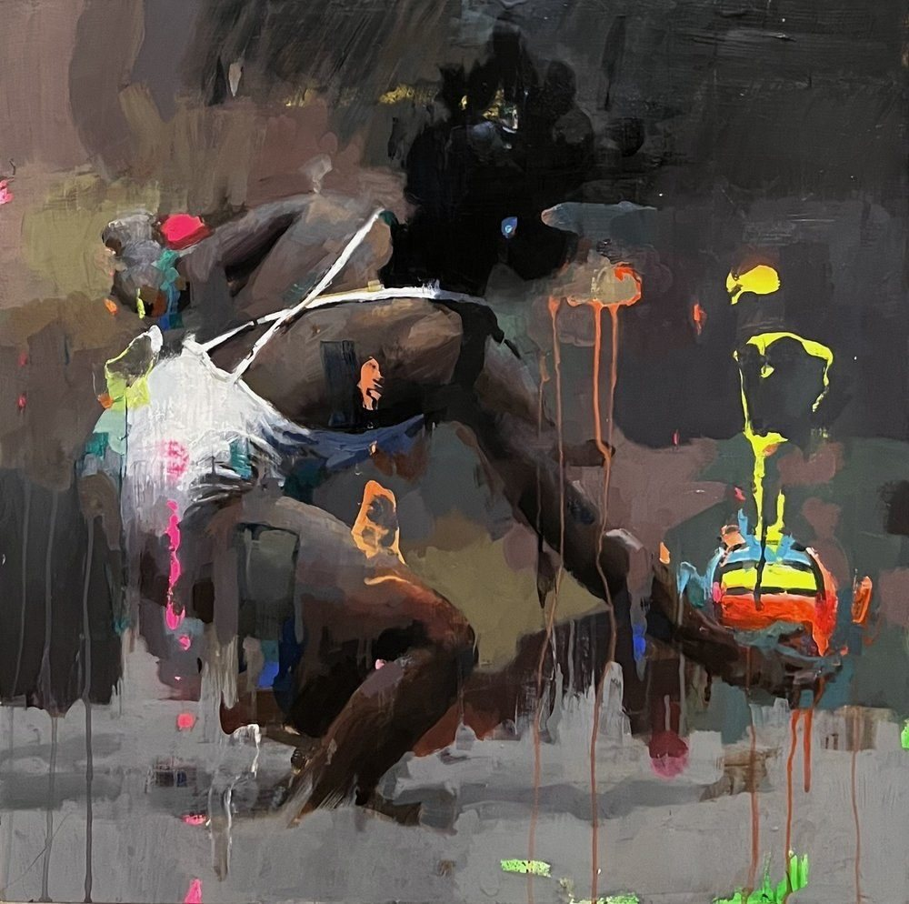
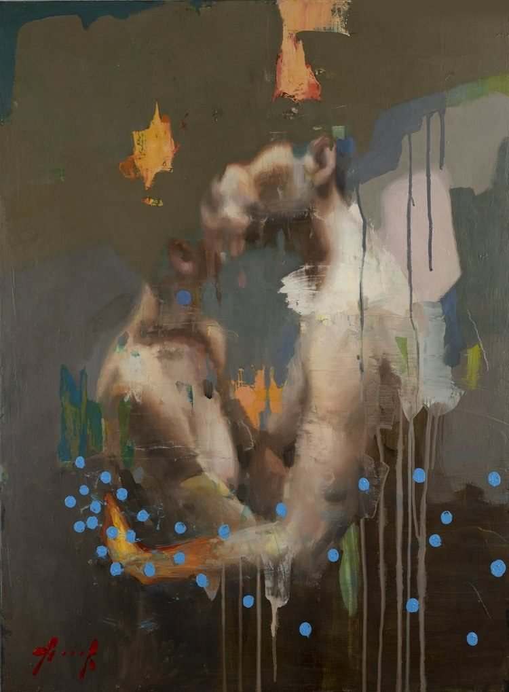
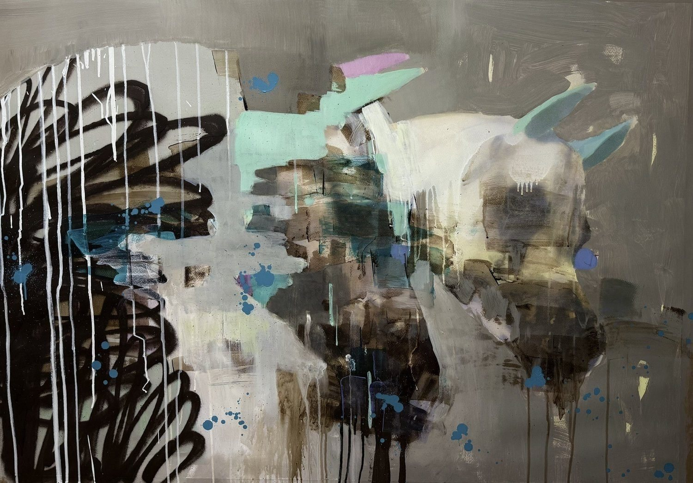
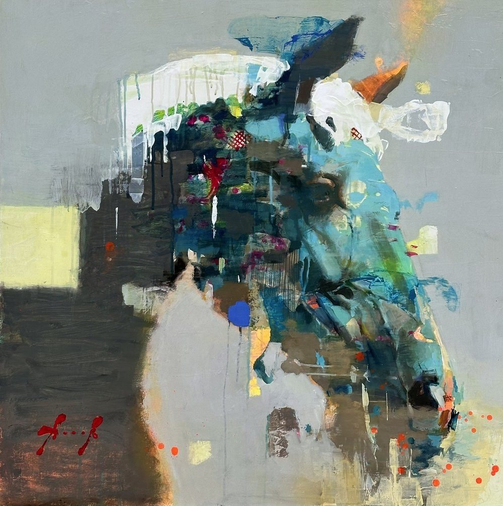
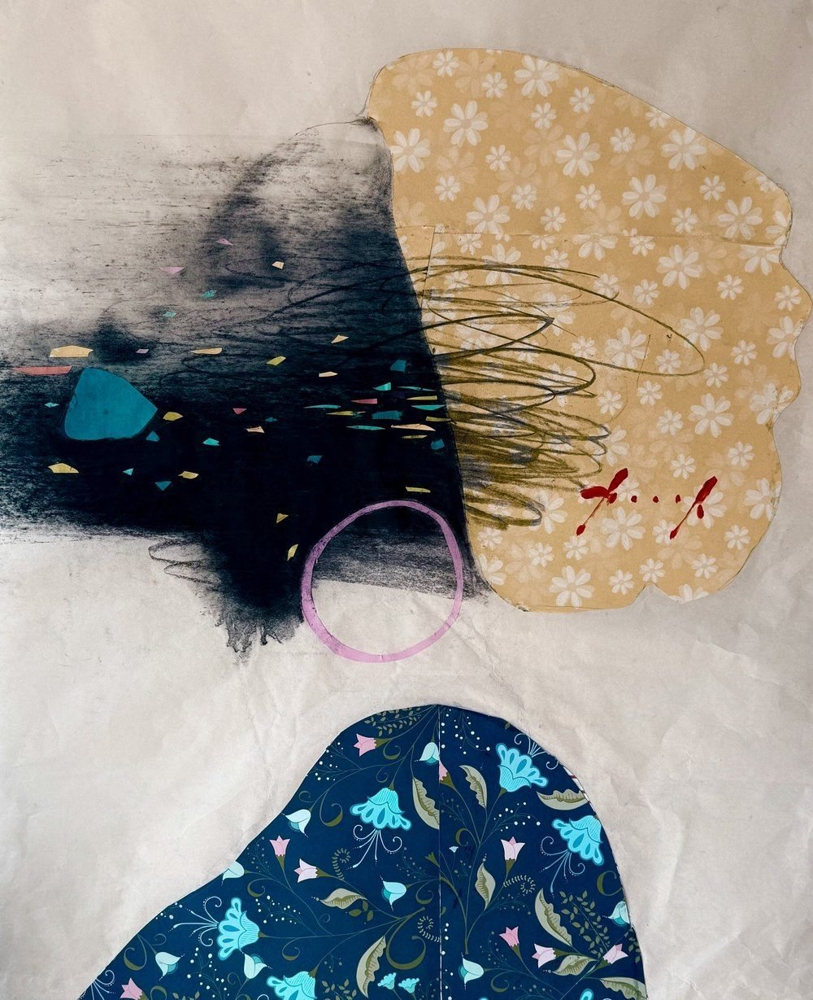
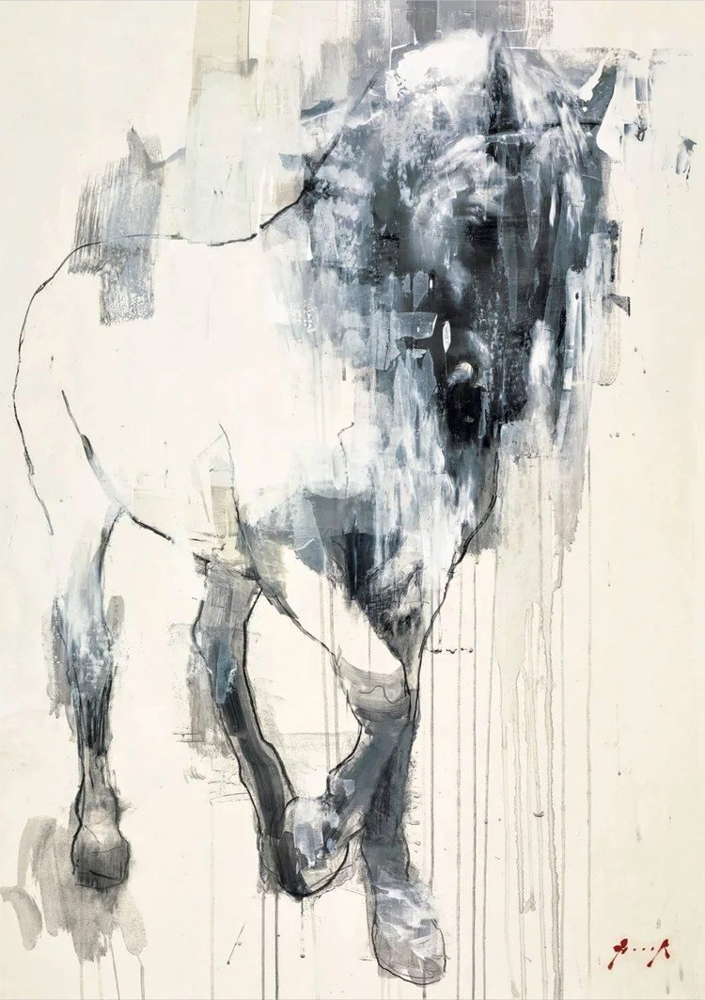


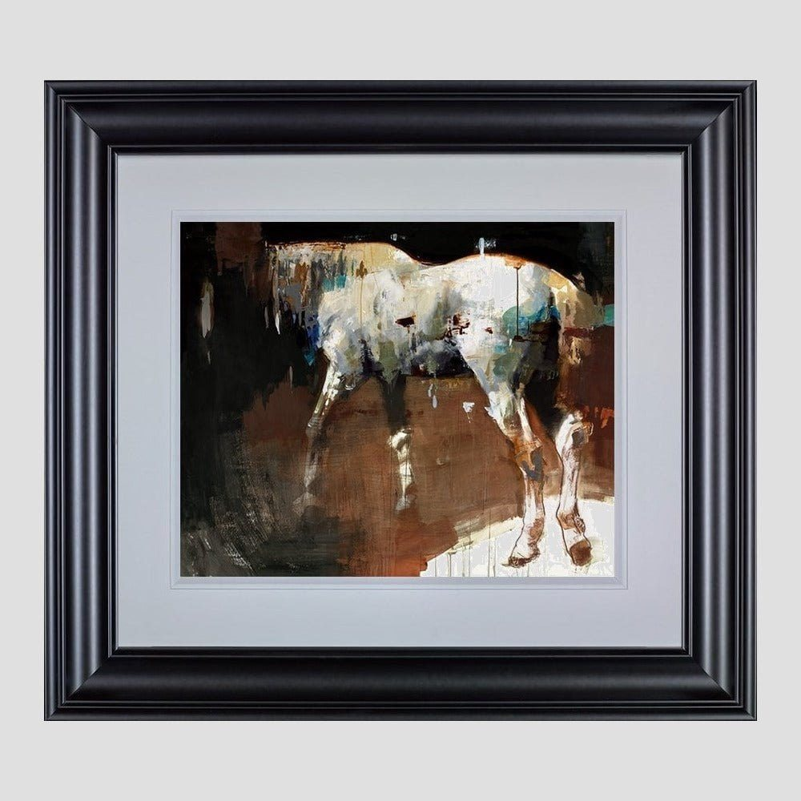
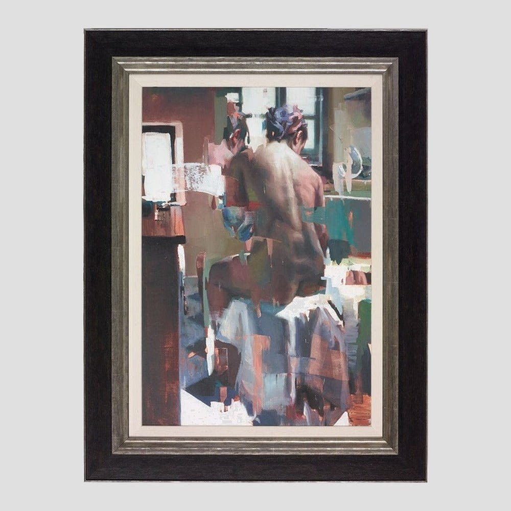

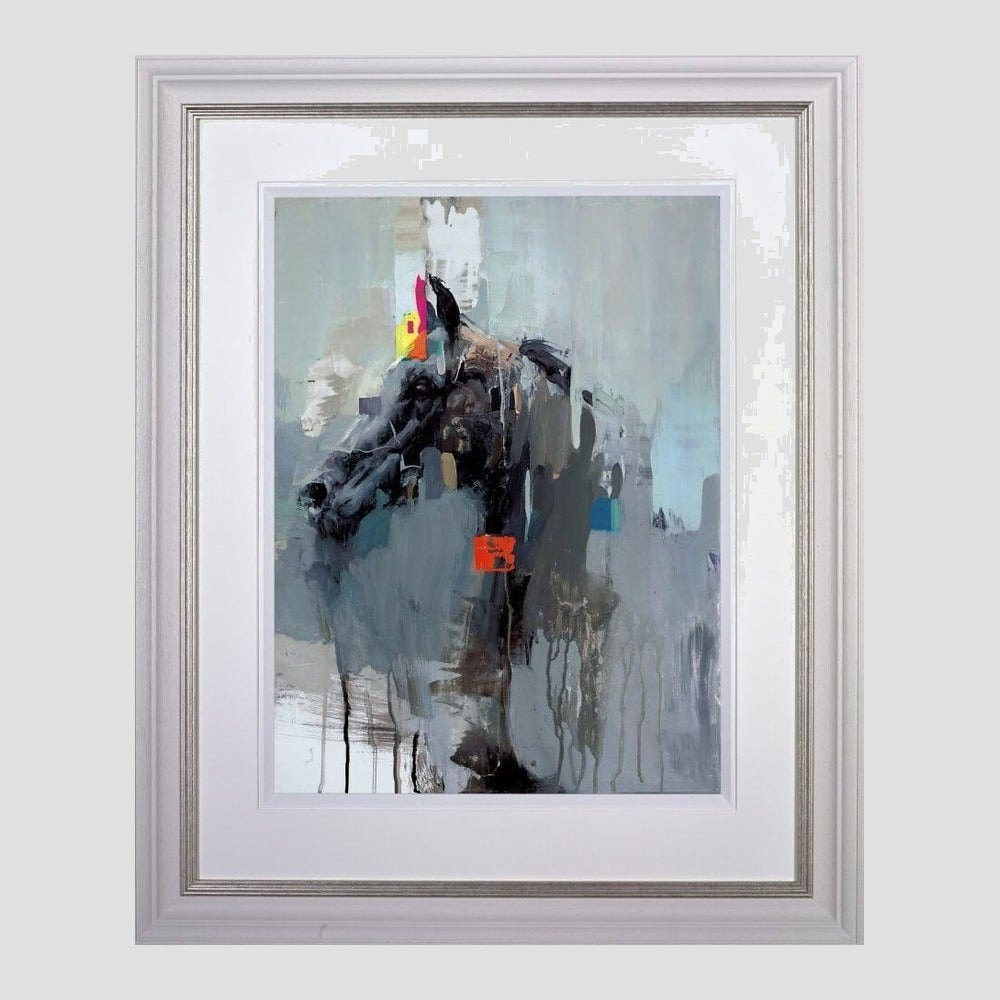


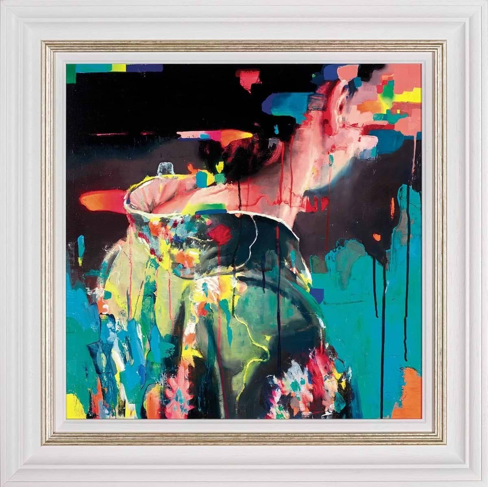
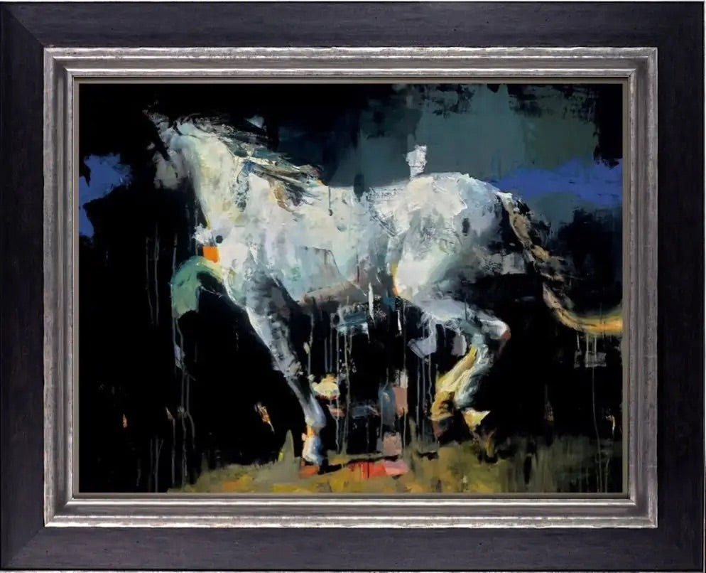
Christian Hook is a contemporary figurative, portrait and equine painter, born in Gibraltar and working there today. He won Sky Arts Portrait Artist of the Year in 2014, and his paintings layer past and present into fractured studies of time and motion.
RSAS view. A Gibraltar painter with a national reputation: Hook's fractured horses and portraits capture movement in a single frame, and his editions offer an accessible way to collect him.
- Award
- Sky Arts Portrait Artist of the Year, 2014
- Prize commission
- Portrait of Alan Cumming for the Scottish National Portrait Gallery
- Honour
- Freedom of the City of Gibraltar, 2017 (as stated by the artist)
- Training
- Illustration, Middlesex University, London
- Based
- Gibraltar
- Nationality
- Gibraltarian
- Career stage
- Established
- Market
- Primary and secondary editions
Biography
Life and training
Hook studied illustration at Middlesex University in London and worked as an illustrator, lecturing at the Royal College of Art and other universities, before committing to painting. He works from a studio in Gibraltar.
Portrait Artist of the Year
In 2014 he won Sky Arts Portrait Artist of the Year. The prize was a commission to paint the actor Alan Cumming for the Scottish National Portrait Gallery, a portrait the National Galleries of Scotland later selected among its 100 masterpieces. His sitters have included Sir Ian McKellen and Amir Khan.
Series and editions
His work is organised in series, among them Painting the Invisible (2021), Shinme (2022), Neon (2023), Electronic Paintings (2024), Horses From Somewhere Else (2024), Arabian Hybrids (2025) and No Mud No Lotus (2025). Signed limited editions are published and sold through established UK galleries. RSAS can source available editions for clients in Gibraltar, Spain and the UK, subject to the publisher's terms.
The Artist and the Studio
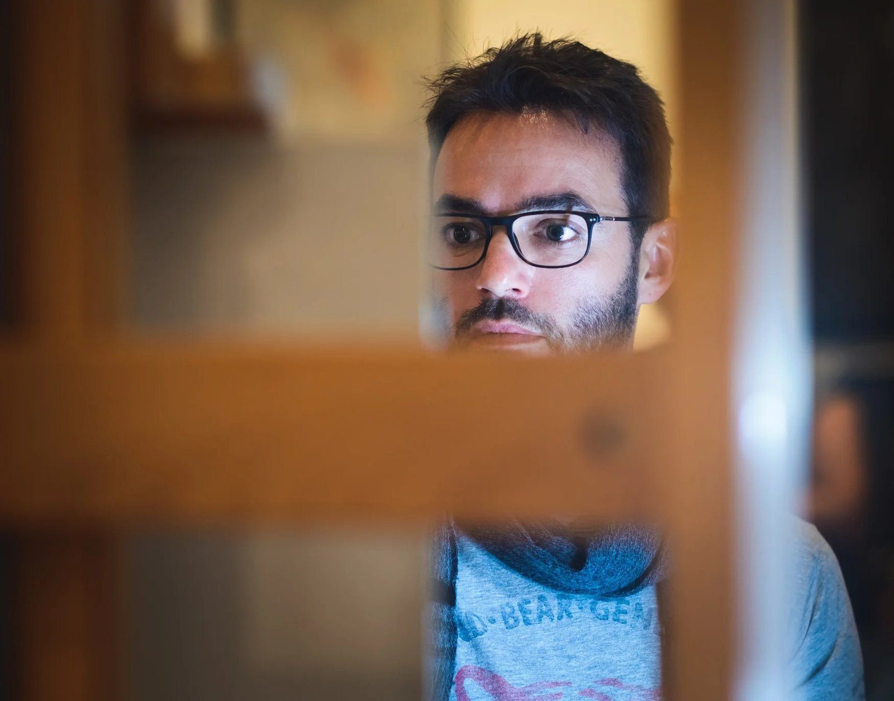
Sources
- christianhook.com, home, About and Work pages
- National Galleries of Scotland artist page
- Gibraltar Chronicle, 4 November 2025
- MP Gallery and Creed Gallery edition pages
- RSAS research file CHRISTIAN-HOOK-AND-BLUE-CHIP.md, 10 November 2026
- Generation Gallery, Christian Hook edition listings, November 2026.
- Creed Gallery, Christian Hook edition listings, November 2026.
- MP Gallery, Christian Hook, Milky Way, November 2026.
Last updated: 17 November 2026